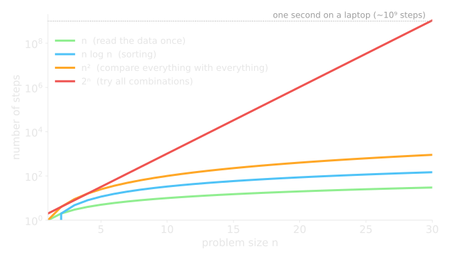
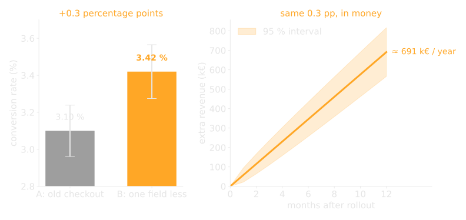
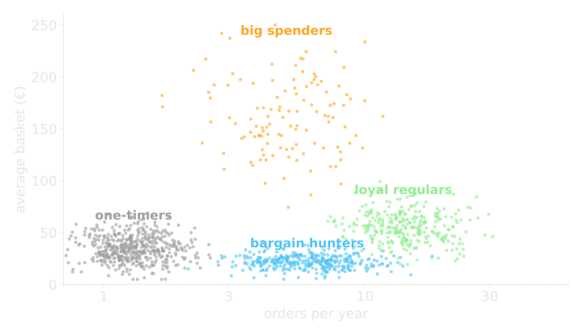

- focus: theoretical CS, AI, bioinformatics
- the question that stuck: what can be computed, and how expensive is it?
- the same question decides today whether a dashboard loads in a second or in an hour
Christoph Baldow
computer scientist · cancer modeller · BI data scientist · Head of AI
One red thread: turning data into models, and models into decisions.
Computer Science @ TU Dresden

Learning: think in models and in costs before you write the first line of code.
Modelling blood cancer

- Chronic myeloid leukemia: one genetic accident, a daily pill (TKI) keeps it in check. Every 3 months a blood value: a patient is a time series
- two slopes = two cell populations. Fast: dividing cells. Slow: dormant stem cells
- a small model with three cell types explains hundreds of patients
Learning: look at the data on the right scale first. The model comes second.
Institute for Medical Informatics and Biometry, TU Dresden. Schematic, simulated patient. Glauche, Kuhn, Baldow et al. 2018, Sci Rep.
What if we give half the dose?

- fit the model to each patient, then simulate what the trial never tested
- prediction: ~90 % of patients in stable remission can halve the dose without losing effect
- later backed by a clinical trial (DESTINY), and extended to stopping therapy completely
- fewer side effects, and a drug that costs more than a car per year
Learning: a model is useful when it answers "what if?", and honest when it comes with an uncertainty.
Fassoni, Baldow, Roeder, Glauche 2018, Haematologica; Hähnel, Baldow et al. 2020, Cancer Res; Karg, Baldow et al. 2022, Front Oncol. Schematic curve.
Data Scientist @ Dataqube

- e-commerce: we removed one field from the checkout and ran an A/B test. 0.3 percentage points sound like nothing, at 400k visitors a month it is a six-figure sum per year
- it works in the other direction too: a "small" UI change can quietly cost a fortune
Learning: small changes move big margins. Measure them, or you will never notice.
Who are our users, actually?

- the "average user" does not exist
- clustering on behaviour data found groups the business had only guessed at
- each group got its own UI flow, offers and KPIs
- and each group reacted differently in the next A/B test
Learning: one number for everyone hides the story. Segment first, then decide.
Simulated data. Clustering and segmentation are a presentation topic in this course.
Head of AI @ atroo
- today: building agentic systems, software where an LLM plans, uses tools and acts
- the model is the easy part. The hard part: the data it can reach, and knowing whether the answer is right
- evaluation is the new A/B test
Learning: AI without data management is a demo. BI without AI is a rear-view mirror.
Why this course looks the way it does
| where I needed it | what we do here |
| clinical trial data, user events, agent tools | (III) Database Architecture, (IV) Data Management |
| patient time series, "is the lift real?" | (II) Python & Pandas, Statistics & A/B testing |
| dashboards, KPIs, user segments | (I) Business Intelligence |
| digital twins, agents | (V) Introduction to AI, (VI) Generative AI & Agents |
What you can expect
- theory as much as needed, then hands-on in Python
- real examples with the "why do I need this in my job"
- all material open on GitHub, also after the course
What I expect
- laptop, Google account for Colab, curiosity
- ask early, work in groups, present your work
- use AI tools, but be able to explain every line
Your turn
Name, background, and one thing you want to be able to do after this course.
I have written a Python script before
I have written a SQL query before
I know what a p-value is (roughly)
I am an Excel power user
I have used ChatGPT & co. for data tasks
I have built a dashboard